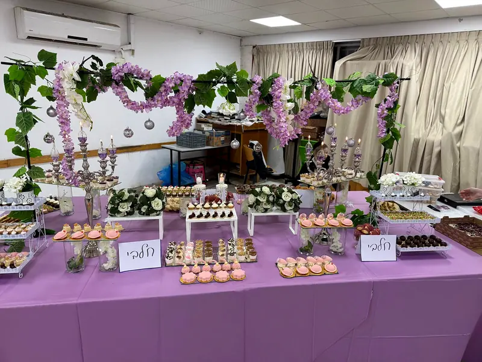
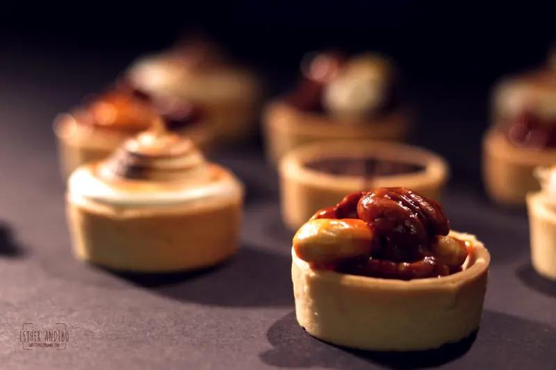
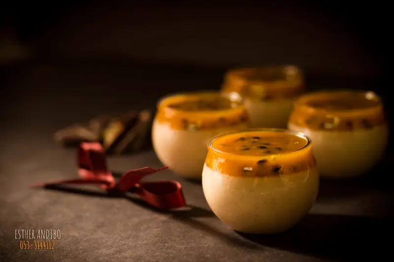
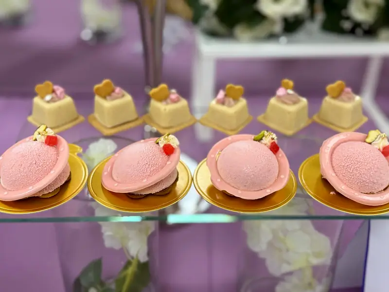
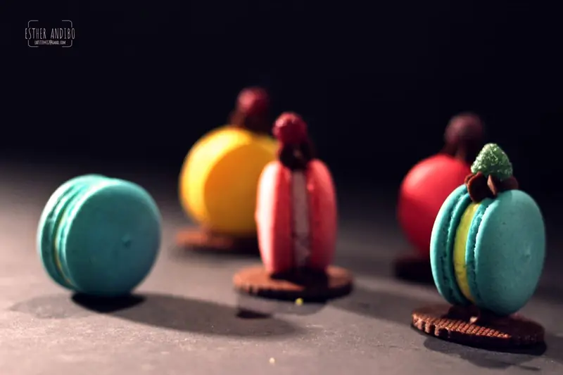
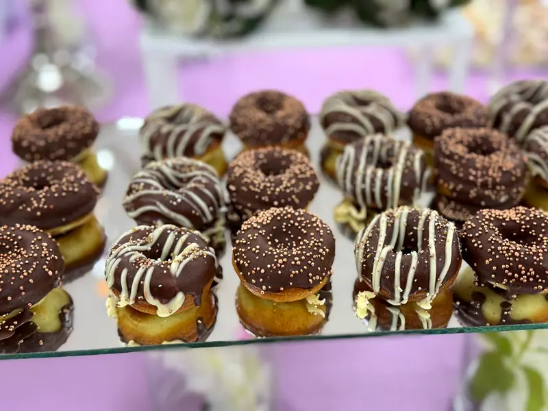
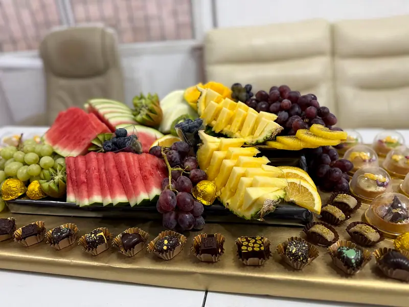

בר קינוחים · בר מתוקים · שולחן קינוחים
בר קינוחים ופטיפורים לאירועים בירושלים
בר הקינוחים הוא מה שהאורחים זוכרים מהאירוע. אנחנו מתכננים, אופים ומקימים בר מעוצב בהתאמה לצבעים, לטעמים ולכמות האורחים, בירושלים והסביבה.
תכננו את הבר וקבלו הצעת מחיר
מה כולל בר קינוחים?

טארטלטים ופאים אישיים
בצק פריך ומילויים עשירים: פיסטוק־לימון, פירות טריים, שוקולד ומרנג קלוי.

כוסות קינוח
שכבות של קרם, פירות וקראנץ' בכוסות אישיות. נוח לאורחים ויפה על השולחן.

מוסים בעיצוב אישי
כיפות מוס בצבעים שמתאימים לאירוע, עם גימור שנראה מרחוק.

מקרונים וביסים קטנים
מוסיפים צבע וגובה לבר, בהתאמה לפלטת האירוע.

דונאטס ומגנום ביס
הפינה שהילדים מחכים לה: מיני דונאטס מצופים ומגנום ביס במילוי עוגה.

עוגה מרכזית
עוגה מעוצבת שמשלימה את הבר, עם כיתוב או שם לפי הבקשה.
בר קינוחים לבר מצווה ולבת מצווה
בבר מצווה ובבת מצווה הבר הוא לרוב הכיבוד המרכזי אחרי הסעודה או בקבלת הפנים, ולכן כדאי לתכנן אותו בכמות נדיבה.
אפשר לבנות את הבר בצבעים שבעל השמחה או בעלת השמחה בחרו, להוסיף כיתוב עם השם, ולשלב עוגה מרכזית מעוצבת. כדאי לפנות כמה שיותר מוקדם, במיוחד לאירועים גדולים.
לשאלה בוואטסאפ ←
בר מתוקים לברית ולשלום זכר
ברית ושלום זכר מגיעים לפעמים בהתראה קצרה. בשבילם יש מגשי פטיפורים וקינוחים אישיים שמגיעים מוכנים להגשה, או בר קטן ואלגנטי שמוקם במקום.
צריכים משהו דחוף? לפעמים אפשר, בתוספת תשלום ובכפוף לזמינות. שלחו הודעה ונבדוק מיד.
לשאלה בוואטסאפ ←
שולחן קינוחים לאירוסין ולשבע ברכות
באירוסין ובשבע ברכות מחפשים קינוחים שנראים חגיגיים ומגיעים מוכנים: מגשי פטיפורים, כוסות קינוח ומארזי מתוקים.
לשבת חתן ולשבע ברכות יש גם מארזים אישיים קטנים לכל אורח: שוקולדים, פיצוחים ועוגיות ארוזים עם סרט.
לשאלה בוואטסאפ ←
בר קינוחים לאירועי חברה
לכנסים, לישיבות ולימי גיבוש: מגשי פטיפורים, מגשי אירוח ופינגר פוד, ובר קינוחים מסודר שמכבד את האורחים.
אפשר להזמין מגשים מוכנים במשלוח או הקמה מלאה במקום, לפי לוח הזמנים של האירוע.
לשאלה בוואטסאפ ←שאלות נפוצות
שאלות על בר קינוחים
מה ההבדל בין בר קינוחים, בר מתוקים ושולחן קינוחים?
בפועל מדובר באותו רעיון: שולחן מעוצב שמרכז את הקינוחים של האירוע במקום אחד. אצלנו הוא כולל פטיפורים, קינוחים אישיים ועוגה מרכזית, ומותאם לצבעים ולטעמים שלכם.
כמה פטיפורים צריך לבר קינוחים?
במתכנן שלנו ההערכה הראשונית היא כ־3 יחידות לאורח כשהבר מוגש כקינוח אחרי ארוחה, וכ־6 יחידות לאורח כשהבר הוא הכיבוד המרכזי. את הכמות הסופית נדייק יחד איתכם.
כמה עולה בר קינוחים?
המחיר תלוי במספר האורחים, בהרכב הקינוחים ובעיצוב. במתכנן הבר תקבלו הערכה של הכמות, ואנחנו נחזור אליכם עם הצעת מחיר מדויקת ובלי התחייבות.
כמה זמן מראש צריך להזמין?
זה תלוי בגודל ההזמנה. לאירועים גדולים כדאי לפנות כמה שיותר מוקדם. צריכים משהו דחוף? לפעמים אפשר, בתוספת תשלום ובכפוף לזמינות.
לאן אתם מגיעים?
לירושלים והסביבה. אפשר לקבל מגשים מוכנים במשלוח, או הקמה מלאה של בר קינוחים במקום האירוע.
מה עם כשרות?
כל המוצרים בכשרות מהודרת. לשאלות על ההשגחה, דברו איתנו ונשמח לפרט.
בואו נתכנן את הבר שלכם
ענו על כמה שאלות קצרות במתכנן, וקבלו הרכב מומלץ והצעת מחיר אישית.